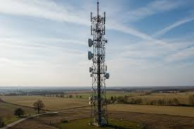
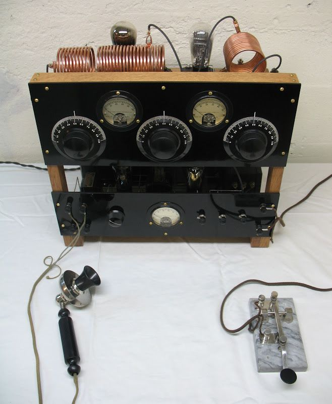
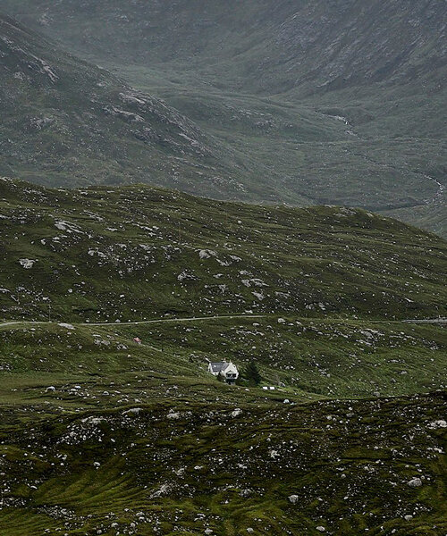

Overview
The Last Signal is a fictional science-fiction short story that follows a lone operator maintaining a communication tower after global systems collapse. The story explores human isolation and the emotional weight of waiting for a response that may never come.
Plot
After a worldwide blackout disables modern communication, a signal technician named Elias remains stationed at a remote broadcast tower. Every day, he sends out a repeating message, hoping someone is still listening.
One evening, a faint reply breaks through the static. The message is fragmented but confirms that Elias is not alone, forcing him to reconsider his isolation.
Themes
- Isolation versus connection
- The role of technology in humanity
- Hope in uncertain environments
Main Characters
- Elias – A former communications engineer and the protagonist
- The Unknown Voice – A distant survivor responding to the signal
Reception
Readers often interpret the broadcast as a symbol of persistence and survival despite overwhelming silence.
Image Gallery



References
Learn more about science fiction at Wikipedia and explore symbolism at Literary Devices.
The story emphasizes hope and resilience through minimal dialogue and environmental storytelling.